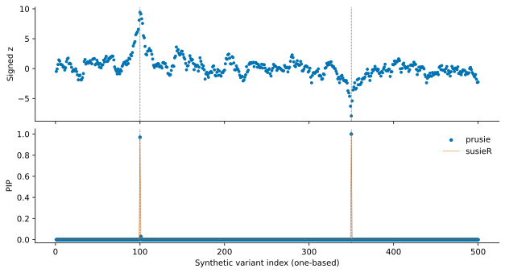

On this page
A 500-variant fine-mapping toy example
The package contains one independent synthetic toy example: 1000 simulated observations and 500 correlated Gaussian predictors. Two predictors have nonzero effects. Its fixed seed, generation method, LD, true effects and synthetic IDs are packaged with the inputs. No human study data or genome build is implied.
Load inputs and fit
After installation, the example works offline from any directory. The resource loader returns independent arrays owned by the caller.
import numpy as np
import prusie
example = prusie.load_example()
inputs = example["inputs"]
print(inputs["R"].shape, inputs["n"])
fit = prusie.susie_rss(**inputs, **example["parameters"])
print("Converged:", fit.converged, "Iterations:", fit.niter)
The signed statistic is beta/SE from marginal Gaussian regression. R is the sample Pearson correlation from those same standardized predictors, in the same variant order. The example uses L=5, at most 100 iterations, tolerance 0.001, requested credible-set coverage 0.95, minimum absolute correlation 0.5, optimized prior variance and fixed residual variance 1. These explicit toy settings are distinct from the public RSS defaults in the API.
For your own inputs, supply effect-aligned signed z and LD r, plus sample size; r² removes information needed by the model. Read inputs before substituting association or LD files.
Read the posterior
lead = int(np.argmax(fit.pip))
print(f"{fit.variant_ids[lead]}: PIP={fit.pip[lead]:.3f}")
for k, component in enumerate(fit.sets["cs_index"]):
members = fit.variant_ids[fit.sets["cs"][k]].tolist()
print("Component:", int(component), "Variants:", members,
"Posterior mass:", float(fit.sets["coverage"][k]),
"Minimum |r|:", float(fit.sets["purity"]["min_abs_corr"][k]))
The independent 500-variant toy example fit converged in 3 iterations and returned 2 credible sets. Its maximum absolute PIP difference from the separately generated susieR 0.16.6 reference was 1.66e-10.
| Original component | Synthetic variants | Returned posterior mass | Minimum |r| |
|---|---|---|---|
| 0 | syn0100 | 0.969674 | 1.000000 |
| 1 | syn0350 | 0.999937 | 1.000000 |

A PIP summarizes a variant's inclusion across active components. Credible-set mass belongs to one original component, and may exceed requested coverage. The component IDs need not be consecutive. An empty set collection leaves PIPs available; a nonconverged fit needs further investigation even if it returns a set. Results describes the full schema.
Save arrays and metadata
import json
from pathlib import Path
out = Path("fine-mapping-result")
out.mkdir(exist_ok=True)
np.savez_compressed(out / "posterior.npz", pip=fit.pip, alpha=fit.alpha,
mu=fit.mu, mu2=fit.mu2, lbf_variable=fit.lbf_variable,
V=fit.V, elbo=fit.elbo, variant_ids=fit.variant_ids)
sets = [{"component": int(c), "members": fit.sets["cs"][k].tolist(),
"posterior_mass": float(fit.sets["coverage"][k])}
for k, c in enumerate(fit.sets["cs_index"])]
metadata = {"prusie_version": prusie.__version__, "parameters": fit.params,
"converged": fit.converged, "niter": fit.niter, "sets": sets,
"generation": example["metadata"]}
(out / "metadata.json").write_text(json.dumps(metadata, indent=2))
Generation and reference
tools/generate_example.py uses NumPy PCG64 seed 20261007, stationary AR(1)
correlation 0.85, sample-standardized predictors, nonzero coefficients 0.35 and
−0.30 at zero-based indices 99 and 349, and independent unit-variance Gaussian
noise. Coordinates are arbitrary synthetic positions at 1000-unit intervals.
tools/generate_example.py --check verifies the exact frozen-file SHA256 hashes
and checks regenerated numerical values within tight floating-point roundoff
bounds. Regenerated array values can differ slightly between CPU numerical kernels; see
the regeneration criteria.
The packaged reference was separately fitted with susieR 0.16.6 using the same inputs and options. Input and reference hashes, parameters, convergence and credible sets accompany the resources. The dataset and generation script are GPL-3.0-or-later. Reproducibility provides offline and live-R commands; numerical accuracy gives measured errors.